Každá miestnosť má rozmery z elektroprojektu, pôdorys v mierke, 3D maketu a fotovizualizácie. Nábytok stojí tam, kde s ním počíta elektro: zásuvky, vypínače aj svetlá. Miestnosti pribúdajú postupne.
Posteľ 180 stojí čelom pri stene oproti skrini, v strede medzi soklíkom a jadrom. Okno je vpravo od nej, keď sa na ňu pozeráš od skrine, dvere do chodby vľavo za tebou. Oproti posteli je skriňa po strop so stolíkom a LED zrkadlom v nike. Rozloženie je podľa elektroprojektu (zásuvky, vypínače, svetlá), farby a nábytok podľa tvojej inšpirácie: krémové bouclé, dub, štuk, béžová a taupe.
ChatGPT dofarbil rendery makety (3. 11. 2026, druhé kolo z opravených makiet; kuchyňa z prvého kola, WC z tretieho kola s obkladom Aura Canvas). Rozloženie drží maketa.
Render makety dofarbený AI (FLUX.2 klein, zadarmo). Polohu a veľkosť nábytku drží maketa, AI mení iba materiály a svetlo. Drobnosti na stolíkoch si AI občas domyslí po svojom.
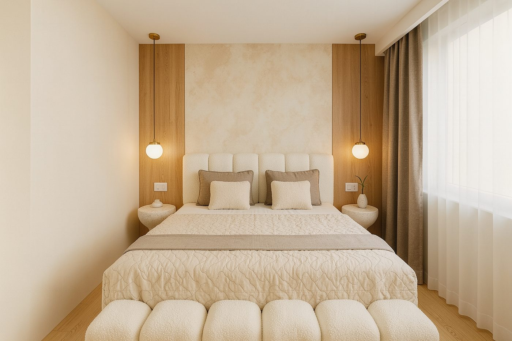
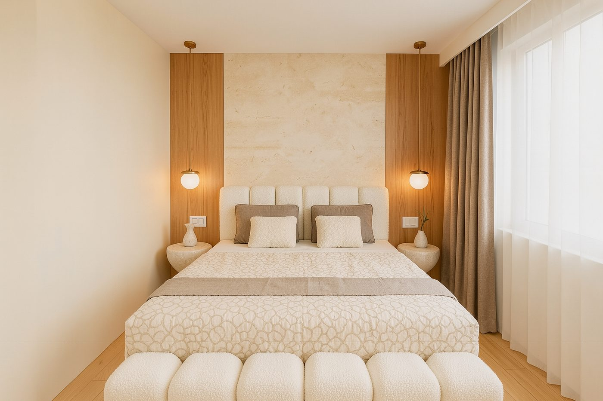
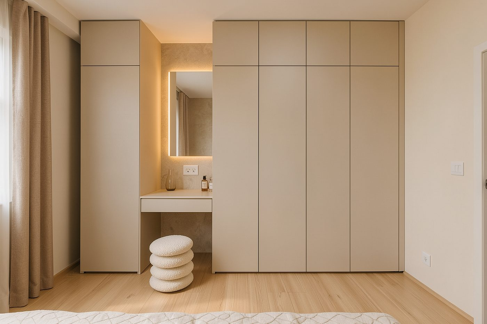
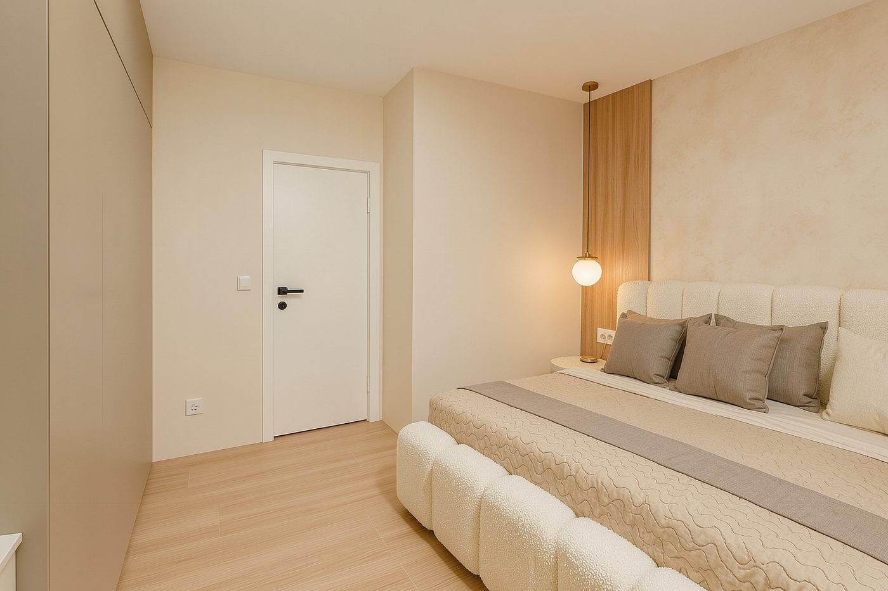
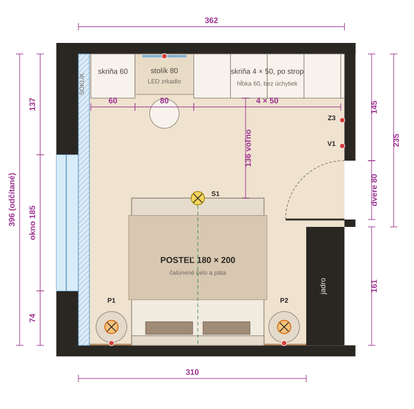
| Čo | Rozmer | Odkiaľ |
|---|---|---|
| Stena so skriňou (od okna po dvere) | 362 cm | projekt, pohľad 3 |
| Stena za posteľou (od okna po jadro) | 310 cm | projekt, pohľad 1 |
| Hĺbka izby (od steny za posteľou po skriňu) | ≈ 396 cm | odčítané z výkresu v mierke, overiť |
| Stena s dverami (od skrine po jadro) | 235 cm | projekt, pohľad 2 |
| Výstupok jadra pri posteli | 52 × 161 cm | dopočítané |
| Svetlá výška | 260 cm | projekt |
| Okno | 185 cm, 137 cm od steny so skriňou | odčítané; parapet 85 a vrch 235 cm sú predpoklad |
| Soklík na záves | 15 cm, po celej stene s oknom | projekt |
| Dvere do chodby | 80 cm, 145–225 cm od skrine, pánty pri jadre | projekt |
| Posteľ | 180 × 200 s rámom, čelo 110 cm | projekt |
| Os postele | 150 cm od hrany soklíka (stred steny) | projekt |
| Nočné stolíky | Ø 42, výška 52, osi 117,5 cm od osi postele | projekt (miesto 45 cm) |
| Voľno medzi posteľou a skriňou | 136 cm | dopočítané |
| Skriňa po strop, hĺbka 60 | 15 + 2 | 60 | nika 80 | 4 × 50 | lišta 5 | projekt |
| Stolík v nike | doska 80 cm nad podlahou, hĺbka 55, šuplík | projekt |
| LED zrkadlo | 60 × 110, spodok 115 cm, os 117 cm od steny s oknom | projekt (šírka 60 odčítaná) |
Celá čalúnená krémovým bouclé. Čelo zo 6 zvislých kanálov, vysoké 110 cm, päta ako lavica zo 6 vankúšov. Prešívaný béžový prehoz, cez posteľ pás v odtieni taupe, dva taupe vankúše a dva krémové.
Za čelom štuk v odtieni travertínu, široký ako posteľ (180 cm). Po stranách zvislé dubové lamely až po strop, za stolíkmi. Na dube sú rámiky Z1+V2 a Z2+V3 vo výške 70 cm.
Kamenné stolíky v tvare presýpacích hodín, Ø 42 cm. Nad nimi visia lampy s opálovou guľou a mosadzným tanierom: 25 cm od steny, spodok 110 cm nad podlahou. P1 je pri okne, P2 pri jadre.
Ploché kruhové svietidlo nad koncom postele, 196 cm od skrine, v osi postele. Keď ležíš, nesvieti do očí.
Hladké dvierka bez úchytiek (push), teplá svetlá greige ako na inšpirácii, s hornými nadstavcami. Vľavo diel 60, potom nika 80 so stolíkom, vpravo 4 × 50 a lišta 5 cm pri dverách.
Doska vo výške 80 cm so šuplíkom, nad ňou LED zrkadlo 60 × 110 s podsvietením (vývod S11). Rámik Z25+V16 je 20 cm nad doskou. Pred stolíkom bouclé taburet.
Soklík ide po celej stene s oknom. Cez okno biela záclona, po stranách ľanové závesy v odtieni taupe.
Biele hladké dvere s čiernou kľučkou. Vypínač V1 je pri kľučke vo výške 110 cm, zásuvka Z3 pri skrini 30 cm nad podlahou (vysávač).
Maketa je v Blenderi postavená z rozmerov vyššie. Zábery sú z výšky očí, s rovnými zvislými hranami. Rovnaké kamery používa aj fotovizualizácia, preto sedia polohy aj mierka.
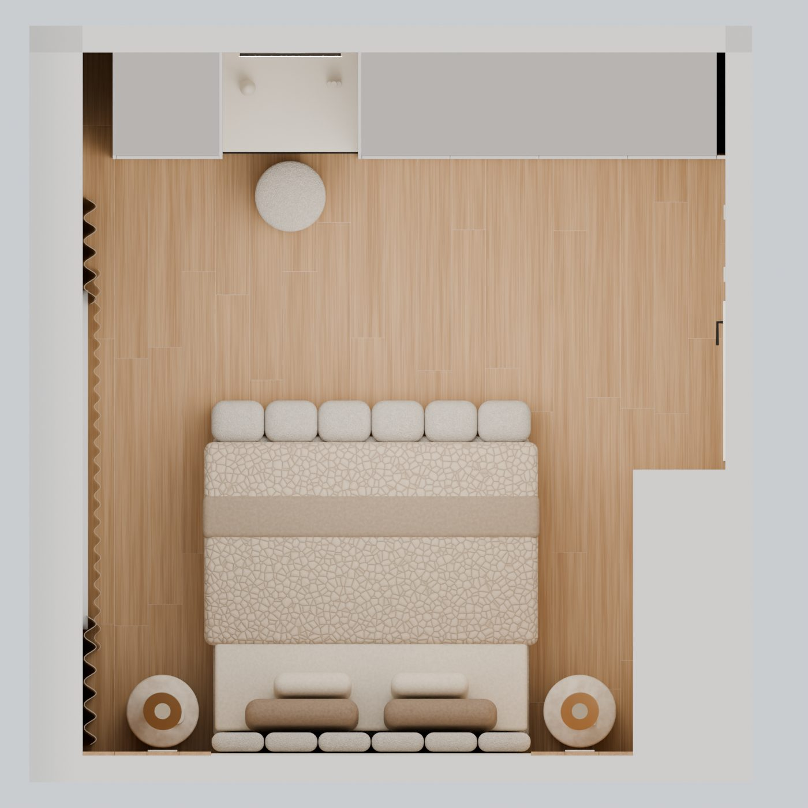
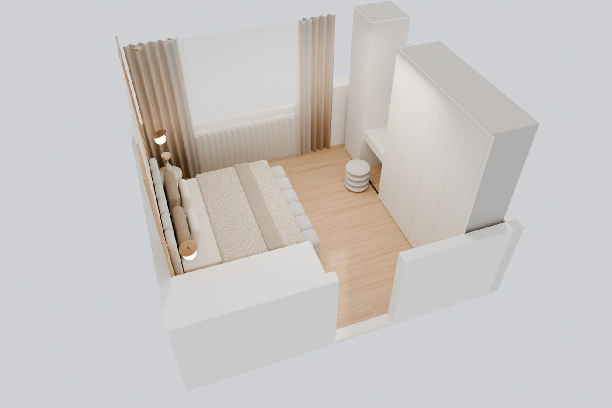
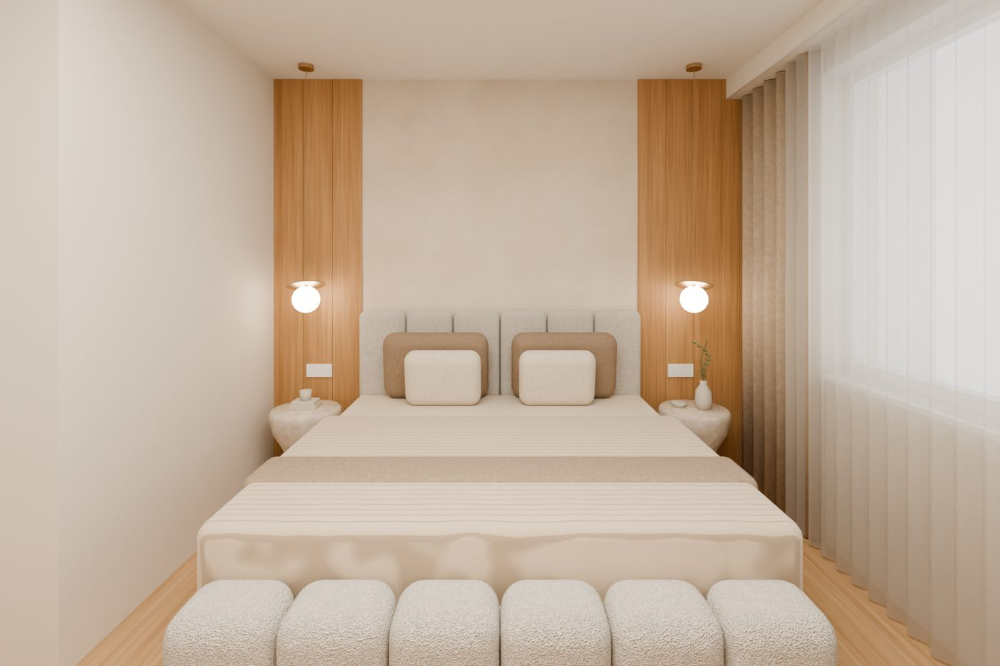
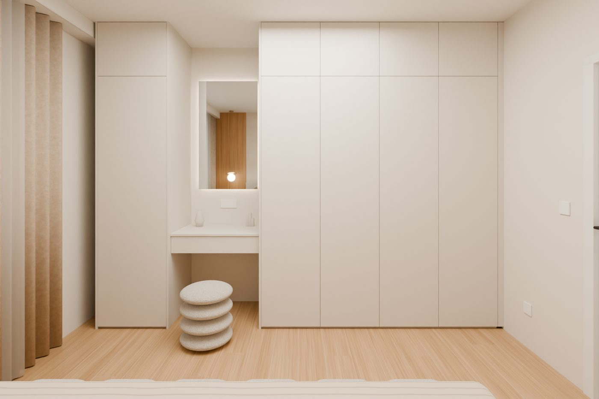
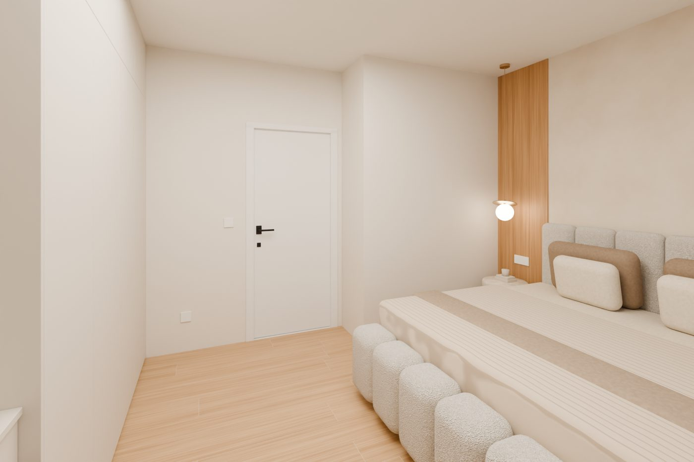
PRÍLOHY (priložiť do Codexu): 1) A-Posteľ-od-skrine.png – render makety, záber A (z priečinka rendery) 2) B-Skriňa-od-postele.png – render makety, záber B 3) T-Pôdorys-zhora.png – maketa zhora, len na kontrolu rozloženia 4) inspiracia-postel.jpg, inspiracia-skrina.jpg – tvoja inšpirácia (štýl, nie rozloženie) PROMPT (vložiť celý, po anglicky): Create photorealistic interior photographs of a real bedroom with your image generation tool. Use each attached blockout render as the base image and edit it; do not compose a new scene. Room facts (must stay true): bedroom 3.62 x 3.96 m, ceiling 2.60 m. A 180 x 200 cm upholstered bed stands with its headboard against the wall opposite the wardrobe, centred on that wall. The window with curtains is on the wall to the right of the bed (seen from the wardrobe). The door to the hallway is on the wall opposite the window, behind the camera in view A. A full-height wardrobe (60 cm unit | 80 cm niche with a desk and LED mirror | four 50 cm units) covers the wall opposite the bed. For EACH render (A and B) output one image, 1536 x 1024 px (3:2), same framing as the render: - Keep EXACTLY the same camera position, angle, perspective and framing, the same room shape, and the same position, size, orientation and count of every object. Do not add, remove, move or resize anything. No extra windows, doors, shelves, wall cabinets, rugs, plants or art. - Grey shading in the render is only lighting, not a colour. Materials and colours (from the inspiration photos, use these exactly): - Walls and ceiling: warm off-white cream (#EEE7DC). - Wall behind the bed: a central panel exactly as wide as the bed in soft cream travertine-look textured venetian plaster (#E2D6C5); left and right of it full-height vertical warm natural oak panels (#C2976A) behind the nightstands, with small white double socket+switch frames at 70 cm. - Floor: light natural oak planks (#CDA982), planks running from the wardrobe towards the bed. - Bed: fully upholstered in cream white boucle (#F0E9DE); headboard 110 cm high with six vertical channels; footboard is a low bench of six puffy boucle cushions. Light beige quilted bedspread with fine wavy stitching (#D3C1AA), a taupe linen runner across the bed (#A8957F), two taupe linen euro pillows and two cream boucle cushions. - Nightstands: two round cream travertine pedestal tables with an hourglass silhouette (#E4DACB), a small vase with an olive branch on the window side, two books and a cup on the other side. - Pendant lamps above both nightstands: opal white glass globe with a small champagne brass disc (#BFA889), thin cord from the ceiling, glowing warm. - Ceiling light above the foot of the bed: flat round white fixture (view B only shows the wardrobe). - Window wall: drywall curtain pelmet along the whole wall at the ceiling, white sheer curtain over the window, taupe linen curtains gathered on both sides. - Wardrobe: handleless flat matte doors in warm light greige (#E3DCD1), floor to ceiling, with a row of top boxes; thin shadow gaps between doors. Niche: plastered back wall in wall colour, floating desk top at 80 cm with one drawer in the same greige, a 60 x 110 cm LED mirror with warm backlight glow, a stacked cream boucle pouf in front of the desk. - Door (view B, right edge): white flush door with a black lever handle. Light and style: soft natural daylight from the window plus warm glow from the pendants and the mirror LED, gentle realistic shadows, high-end real estate photography, wide angle 18-20 mm, straight vertical lines, no people, no text, no watermark. Afterwards compare each result with its render: if any object moved, appeared or disappeared, regenerate that view once with a stricter instruction.
Linka 310 cm v module 60 stojí pri stene ku kúpeľni: drez, umývačka, šuplíky, indukcia s rúrou a široké šuplíky 67. Oproti pri okne je vstavaná chladnička, úzke dubové police, barová doska pod oknom s tromi stoličkami a potravinová skriňa. Medzi linkou a skriňami ostáva priechod 90 cm. Farby podľa tvojej inšpirácie: greige spodné skrinky bez úchytiek, horné skrinky v dube, krémová kamenná doska, travertínový obklad a LED pod skrinkami.
ChatGPT dofarbil rendery makety (3. 11. 2026, druhé kolo z opravených makiet; kuchyňa z prvého kola, WC z tretieho kola s obkladom Aura Canvas). Rozloženie drží maketa.
Render makety dofarbený AI (FLUX.2 klein, zadarmo). Polohu a veľkosť nábytku drží maketa, AI mení iba materiály a svetlo. Zábery A a B sú čelné ako na inšpirácii: kamera stojí za protiľahlou stenou, ktorá je v zábere vynechaná, lebo kuchyňa je hlboká len 210 cm.
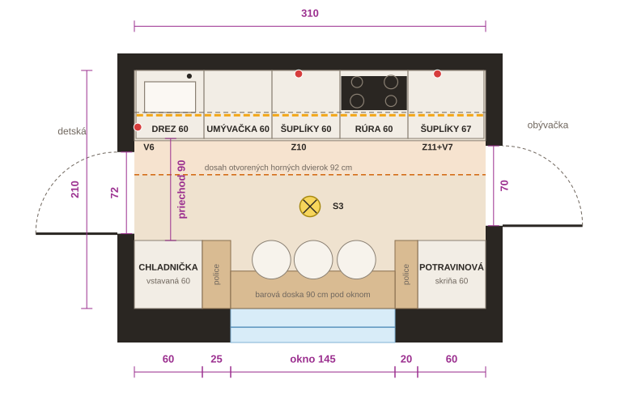
| Čo | Rozmer | Odkiaľ |
|---|---|---|
| Kuchyňa | 310 × 210 cm | projekt, strana 3 |
| Svetlá výška | 260 cm | predpoklad ako v spálni, projekt píše len po strop |
| Linka | 1,5 | drez 60 | umývačka 60 | šuplíky 60 | indukcia a rúra 60 | šuplíky 67 | 1,5 | projekt |
| Pracovná doska | 93 cm nad podlahou, hrúbka 2 cm | projekt (hrúbka podľa inšpirácie) |
| Súvislá pracovná plocha | 120 cm medzi drezom a indukciou | projekt |
| Horné skrinky | od 150 cm po strop, hĺbka 37 | projekt |
| Priechod | 90 cm medzi linkou a chladničkou | projekt |
| Stena s oknom | chladnička 60 | police 25 | okno 145 | police 20 | potravinová skriňa 60 | projekt |
| Okno | 145 cm, spodok 92, vrch 230 cm | šírka z projektu, výška odčítaná (≈ 140 cm) |
| Barová doska | 90 cm nad podlahou, hĺbka 33, 3 stoličky | projekt (doska je voliteľná) |
| Prechod do detskej | 72 cm, 66 cm od steny s oknom | odčítané z výkresu |
| Prechod do obývačky | 70 cm, 73 cm od steny s oknom | odčítané z výkresu |
| Stropné svetlo S3 | 120 cm od steny s linkou, 155 cm od steny pri detskej | projekt |
Spodné skrinky bez úchytiek s gola profilom v teplej greige. Drez vľavo pri pôvodnom odpade, hneď vedľa umývačka, potom tri šuplíky, rúra pod indukciou a vpravo dva široké šuplíky 67 cm na hrnce.
Pracovná doska z krémového kameňa hrubá 2 cm. Za linkou až po horné skrinky travertínový obklad, ktorý sa zalomí aj na bočné steny.
Dubové dvierka na výšku od 150 cm po strop, nad indukciou integrovaný digestor. Pod skrinkami LED pásik L4 po celej dĺžke linky.
Béžový granitový drez pod doskou a čierna matná batéria s vysokým výtokom, ako na inšpirácii.
Vysoké skrine po strop v rovnakej greige ako linka, každá s tromi dvierkami vrátane horného nadstavca. V potravinovej skrini je predpríprava na mikrovlnku (Z13).
Úzke dubové police (25 a 20 cm) po oboch stranách okna až po strop. Medzi nimi dubová barová doska vo výške 90 cm a tri stoličky s bouclé sedákom na čiernych nohách. Na okne ľanová rímska roleta.
Ploché kruhové svietidlo 120 cm od linky, mimo dosahu otvorených horných dvierok (92 cm).
Dvojzásuvka Z10 vľavo od indukcie a rámik Z11 + V7 (3 zásuvky a vypínač) vpravo, obe 125 cm nad podlahou, teda 32 cm nad doskou. Vypínač V6 je na bočnej stene pri dreze.
Maketa je v Blenderi postavená z rozmerov vyššie. Zábery sú z výšky očí, s rovnými zvislými hranami. Rovnaké kamery používa aj fotovizualizácia, preto sedia polohy aj mierka.
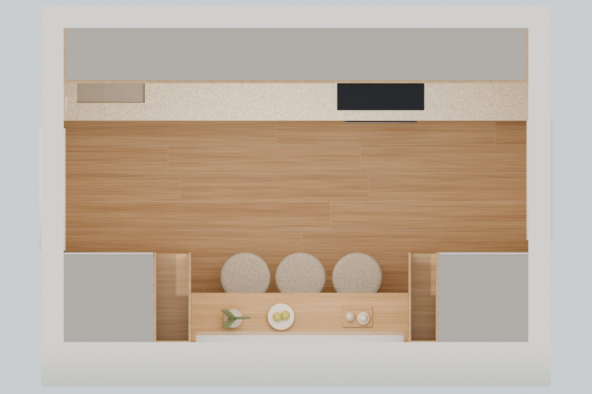
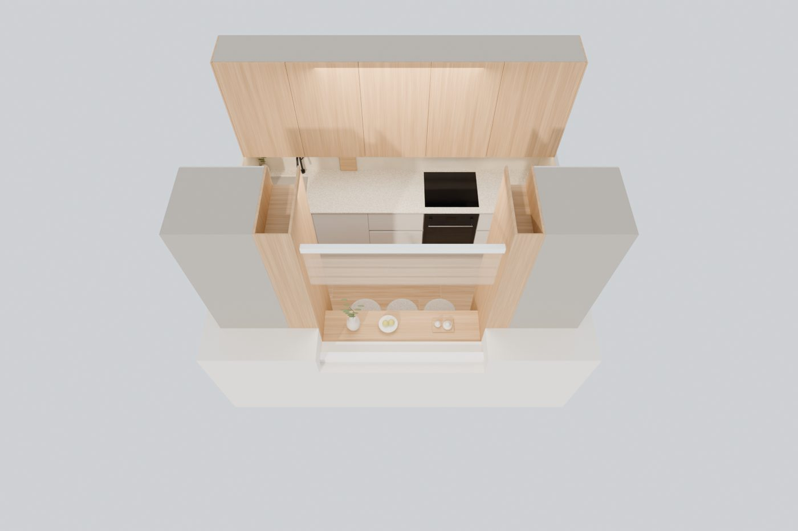
PRÍLOHY (priložiť do Codexu): 1) A-Linka.png, B-Okno-a-bar.png, C-Od-obývačky.png – rendery makety (priečinok rendery\kuchyna) 2) T-Pôdorys-zhora.png – maketa zhora, len na kontrolu rozloženia 3) kuchyna-linka.png, kuchyna-okno-bar.png – tvoja inšpirácia (štýl, nie rozloženie) PROMPT (vložiť celý, po anglicky): Create photorealistic interior photographs of a real kitchen with your image generation tool. Use each attached blockout render as the base image and edit it; do not compose a new scene. Room facts (must stay true): galley kitchen 3.10 x 2.10 m, ceiling 2.60 m. Along one long wall a 3.10 m kitchen run, from the left: sink 60, dishwasher 60, three drawers 60, induction hob with a built-in oven below 60, two wide drawers 67. Worktop at 93 cm. Upper cabinets from 150 cm to the ceiling. On the opposite wall: built-in fridge column 60, open oak shelves 25, window 145 with a bar counter at 90 cm and three stools, open oak shelves 20, pantry column 60. Passage 90 cm. Doorways in both short walls (to a child's room and to the living room). For EACH render output one image, 1536 x 1024 px (3:2), same framing as the render: - Keep EXACTLY the same camera position, angle, perspective and framing, the same room shape, and the same position, size, orientation and count of every object. Do not add, remove, move or resize anything. No extra cabinets, shelves, appliances, windows, rugs or art. - Views A and B are frontal sections: the wall behind the camera is intentionally left out. - Grey shading in the render is only lighting, not a colour. Materials and colours (from the inspiration photos): - Walls and ceiling warm off-white cream (#EEE7DC); light natural oak plank floor (#CDA982). - Base cabinets and both tall columns: handleless flat matte fronts in very light warm greige, almost off-white cashmere (#D9D1C6), recessed gola channels, recessed plinth. - Upper cabinets: tall flat doors in light natural oak veneer with vertical grain (#CDA77B), an integrated stainless cooker hood strip above the hob, warm LED strip under the cabinets. - Worktop: thin 2 cm pale cream quartz with fine speckles (#E6DDCD). Backsplash from worktop to the upper cabinets: pale cream travertine slab (#E4D8C4), returning on both side walls. - Undermount beige granite sink, matte black high faucet, black glass induction, black oven. - Open shelves and bar counter: light natural oak; small cream ceramics, books, small plants. - Bar stools: round cream boucle seats (#E2D6C4), thin black metal legs with a footring. - Window: white two-sash PVC, light linen roman blind lowered at the top, trees outside. - Small white socket frames on the backsplash; white flush doors with black lever handles. Light and style: bright soft daylight from the window plus the warm LED glow, gentle realistic shadows, high-end real estate photography, straight vertical lines, no people, no text. Afterwards compare each result with its render: if any object moved, appeared or disappeared, regenerate that view once with a stricter instruction.
Úzke WC pri kúpeľni s dverami 60 cm do chodby. Pri protiľahlej stene je predstena pre závesné WC po celej šírke, nad ňou otvorená dubová polica a dubová skrinka po strop, ako na tvojej inšpirácii. Steny aj podlaha sú obložené dlažbou Aura Canvas Mate 60 × 60 z Merkury, svetlosivou s jemnými bielymi žilkami.
ChatGPT dofarbil rendery makety (3. 11. 2026, druhé kolo z opravených makiet; kuchyňa z prvého kola, WC z tretieho kola s obkladom Aura Canvas). Rozloženie drží maketa.
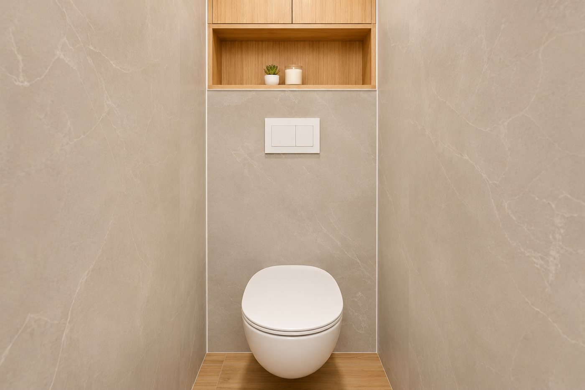
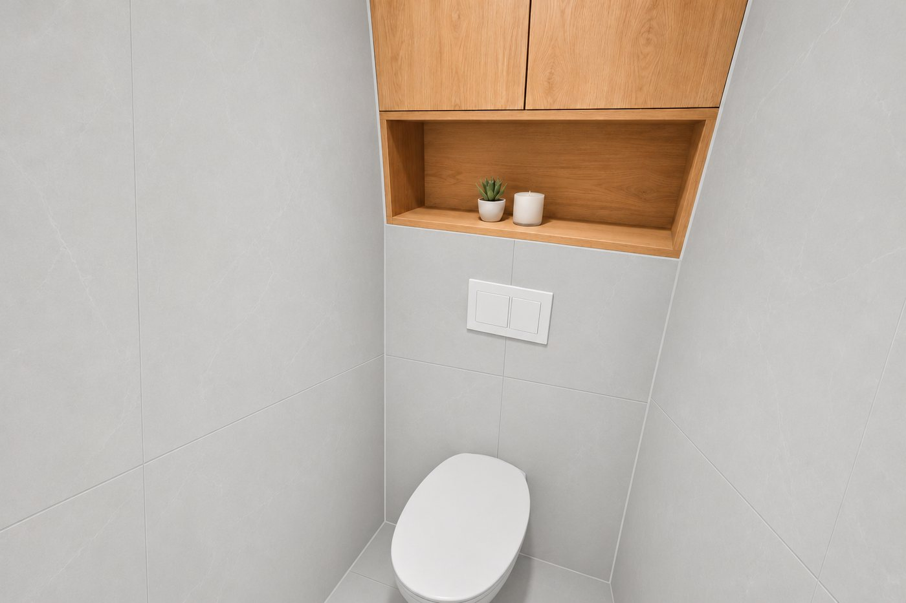
Render makety dofarbený AI (FLUX.2 klein, zadarmo). Polohu a veľkosť nábytku drží maketa, AI mení iba materiály a svetlo. Záber A je čelný ako na inšpirácii, kamera stojí vo dverách a stena s dverami je v zábere vynechaná.
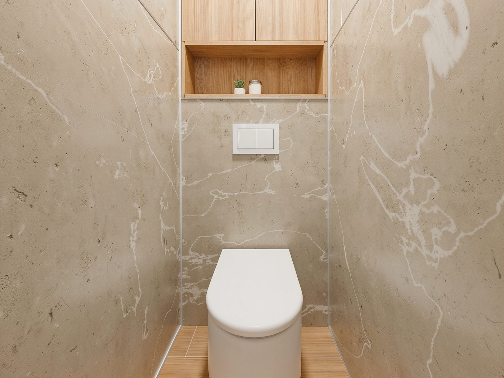
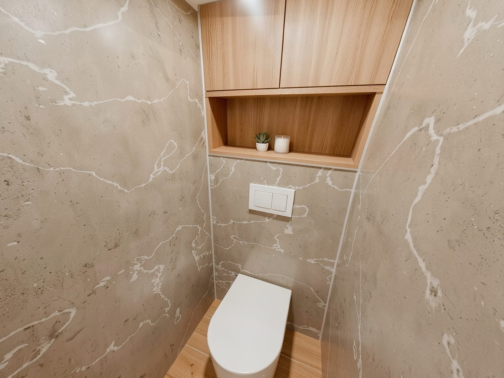
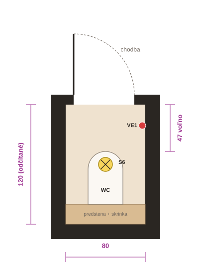
| Čo | Rozmer | Odkiaľ |
|---|---|---|
| WC | ≈ 80 × 120 cm | odčítané z pôdorysu v mierke, overiť |
| Svetlá výška | 260 cm | predpoklad ako v spálni |
| Dvere | 60 cm, otvárajú sa do chodby | odčítané z pôdorysu |
| Predstena | hĺbka 20 cm, výška 122 cm, po celej šírke | návrh podľa inšpirácie |
| Otvorená polica | 30 cm, od 122 do 152 cm | návrh podľa inšpirácie |
| Skrinka nad policou | dvoje dvierka od 152 cm po strop, hĺbka 20 | návrh podľa inšpirácie |
| Závesné WC | misa 53 cm, sedadlo 42 cm nad podlahou | bežná montáž |
| Voľno pred misou | 47 cm po stenu s dverami | dopočítané |
| Stropné svetlo S6 | v strede stropu | projekt |
| Ventilátor VE1 | na stene pri šachte, ≈ 230 cm, pri existujúcom vetracom otvore | projekt |
Závesná misa bez okraja s tenkým sedadlom, biele ovládacie tlačidlo v osi misy asi 100 cm nad podlahou. Predstena je obložená tou istou dlažbou ako steny.
Nad predstenou otvorená dubová polica na sviečku či papier, nad ňou dvoje dubové dvierka až po strop na zásoby. Rovnaký dub ako v kuchyni.
Aura Canvas Mate 60 × 60 z Merkury, svetlosivý s jemnými bielymi žilkami, na stenách po strop aj na podlahe. Vo vnútorných rohoch tenké biele lišty.
Stropné svetlo S6 v strede, ventilátor VE1 beží so svetlom a po vypnutí chvíľu dobieha. Vypínač V10 je zvonku v chodbe.
Maketa je v Blenderi postavená z rozmerov vyššie. Zábery sú z výšky očí, s rovnými zvislými hranami. Rovnaké kamery používa aj fotovizualizácia, preto sedia polohy aj mierka.
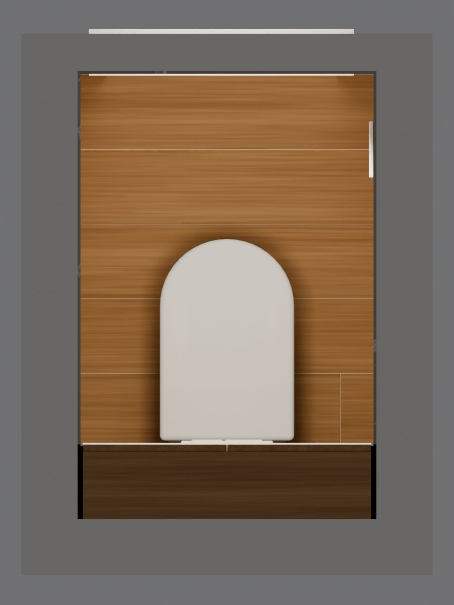
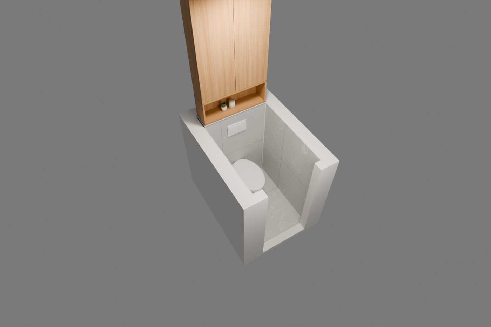
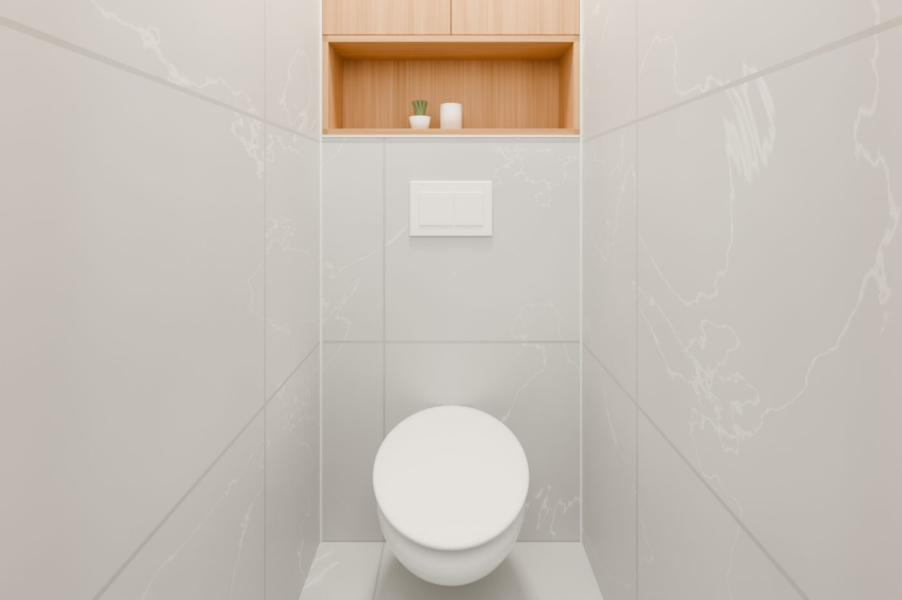
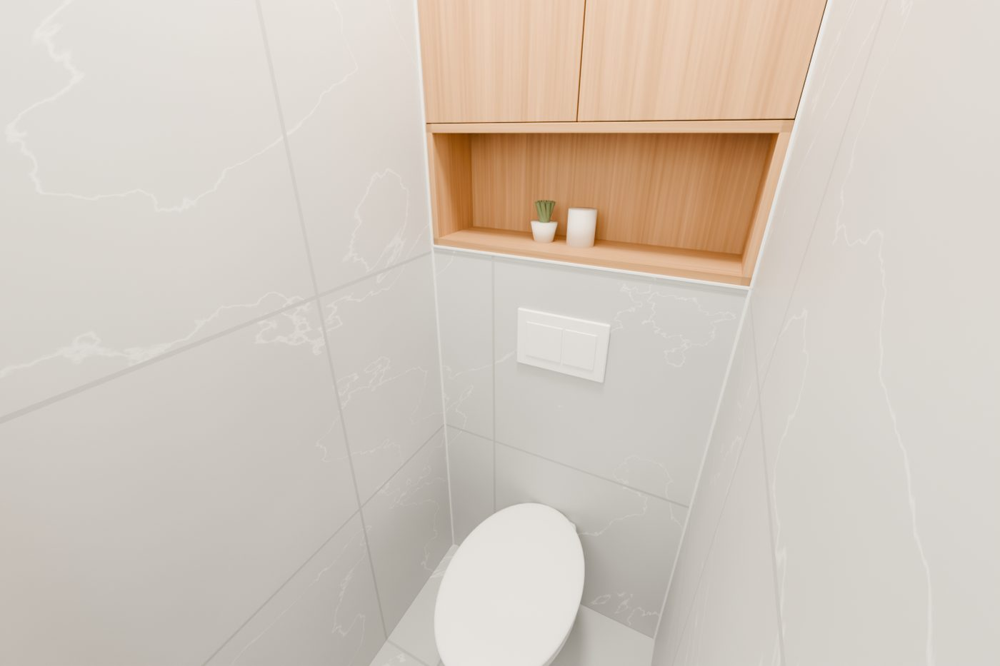
TV stena s lamelami a podsvieteným panelom je pri chodbe, gauč 270 cm oproti pri stene za gaučom. Nad gaučom sú horné skrinky s LED pásikom a za gaučom nízka dubová polica s obrazmi a dekoráciami, ako na tvojom návrhu. Jedálenský stôl Ø 90 s tromi stoličkami stojí pri lamelách na stene s kuchyňou, pod svietidlom P3. Na celej stene s balkónom je soklík so záclonou a ľanovými závesmi. Farby podľa fotky inšpirácie: krémové bouclé, svetlý dub, štuk a béžový kameň.
ChatGPT dofarbil rendery makety (3. 11. 2026, druhé kolo z opravených makiet; kuchyňa z prvého kola, WC z tretieho kola s obkladom Aura Canvas). Rozloženie drží maketa.
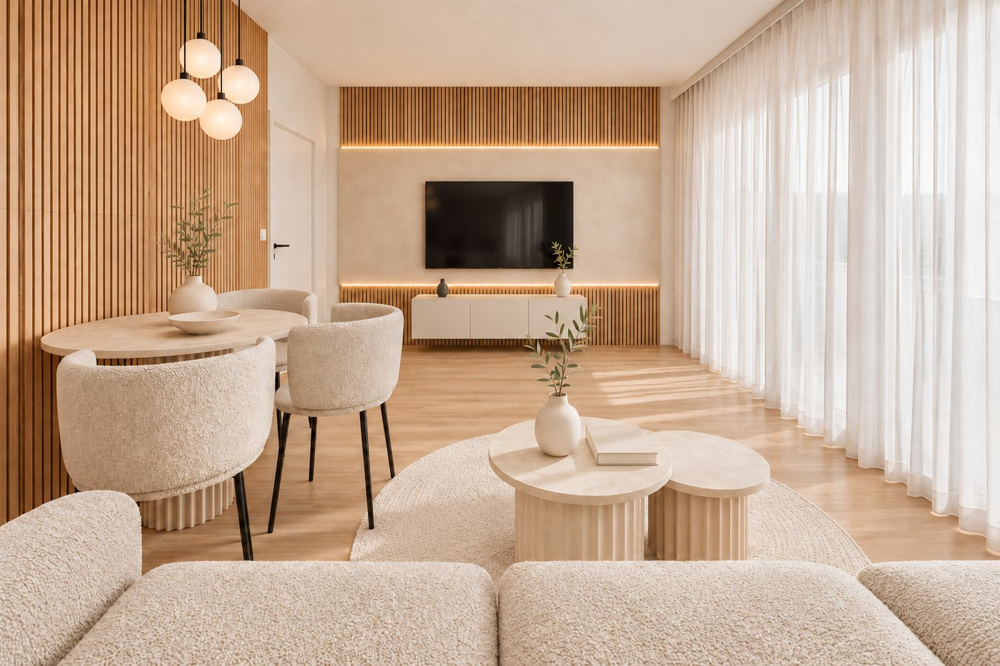
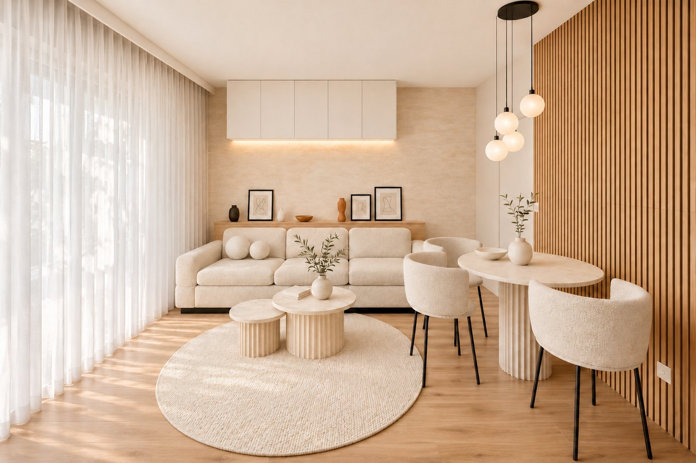
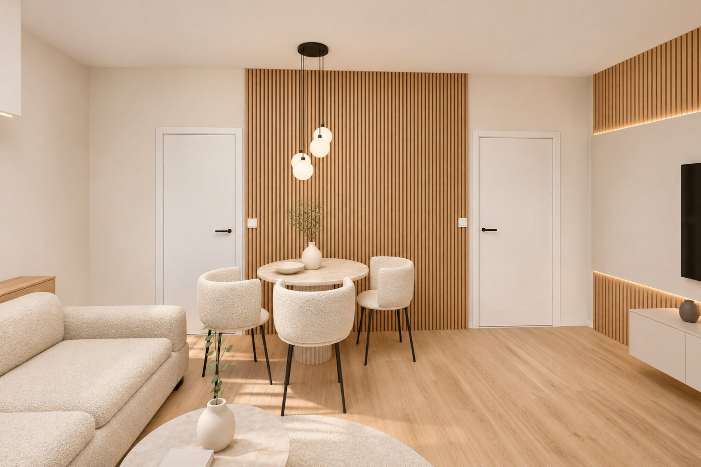
Render makety dofarbený AI (FLUX.2 klein, zadarmo). Polohu a veľkosť nábytku drží maketa, AI mení iba materiály a svetlo. Drobné dekorácie (vázy, knihy, obrazy) si AI domýšľa po svojom.
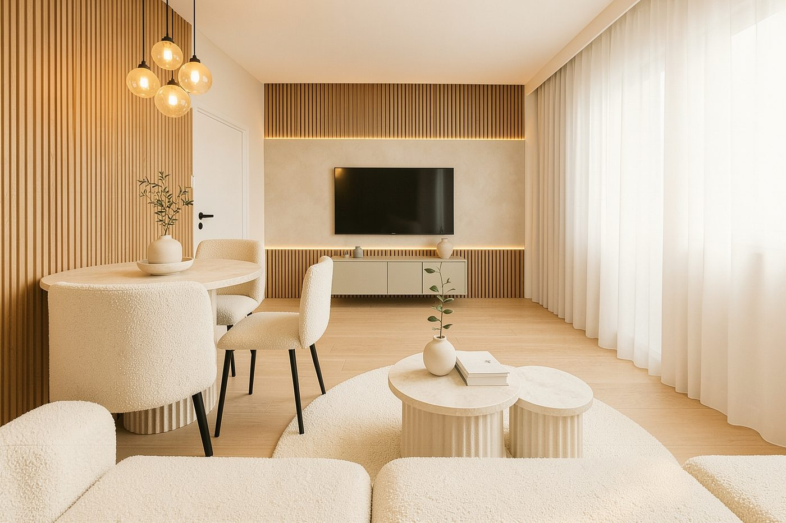
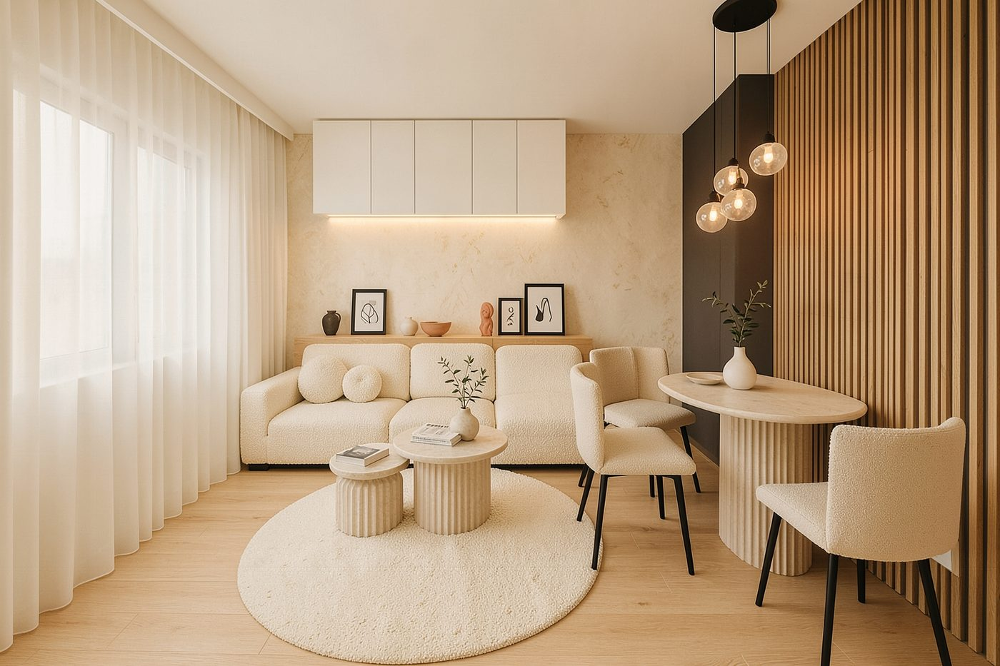
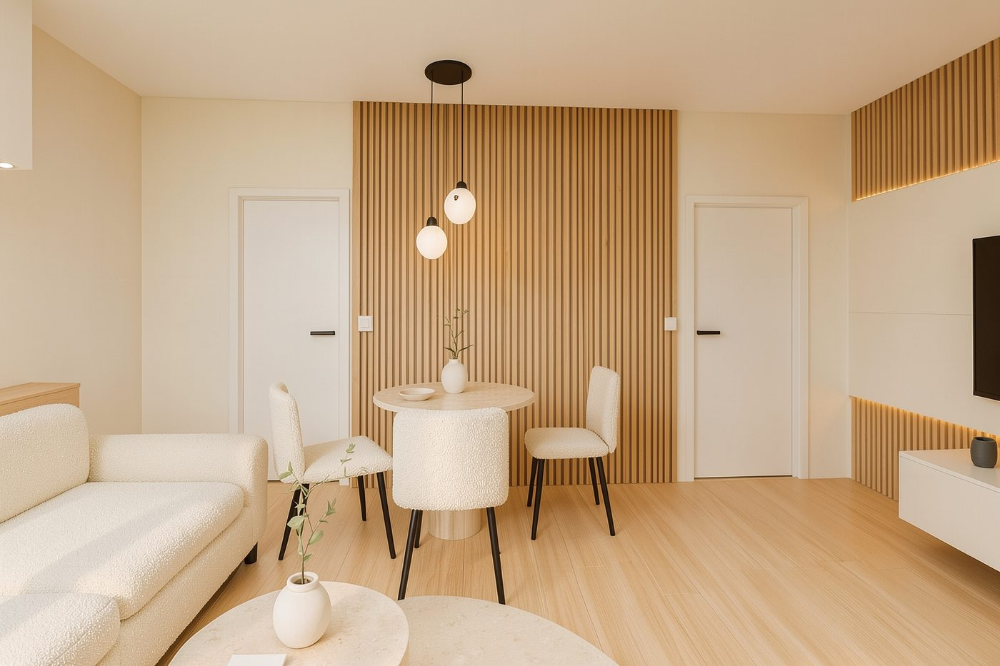
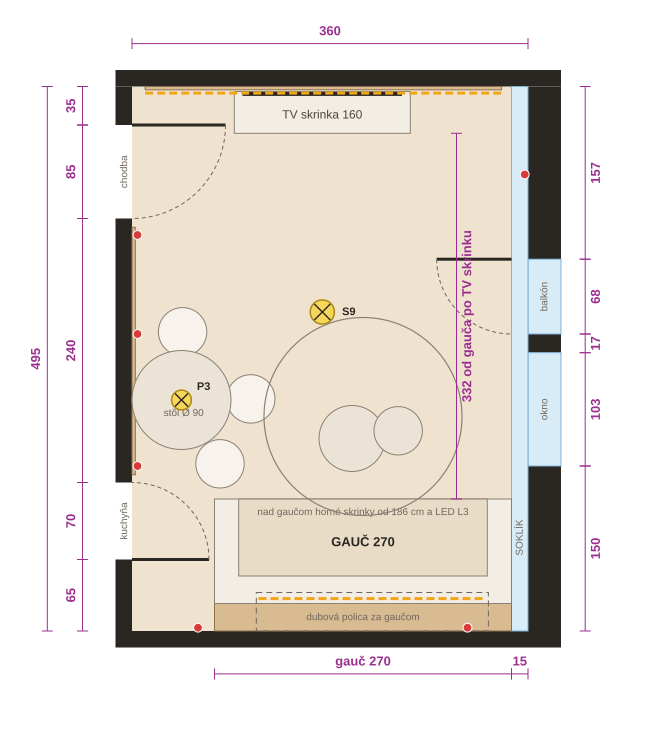
| Čo | Rozmer | Odkiaľ |
|---|---|---|
| Obývačka | 360 × 495 cm | projekt, pohľady 1 až 4 |
| Svetlá výška | 260 cm | projekt |
| Dvere do kuchyne | 70 cm, 65 cm od steny za gaučom | projekt |
| Dvere z chodby | 85 cm, 35 cm od TV steny | projekt |
| Balkónové dvere | 68 cm, 157 cm od TV steny, výška 210 | projekt (výška odčítaná) |
| Okno | 103 cm, parapet 85, vrch 210 cm | projekt (výšky odčítané) |
| Soklík na záves | 15 cm, po celej stene s balkónom | projekt |
| TV stena | lamely 12 až 336 cm, svetlý panel od 60 do 198 cm, TV ~65" v osi 173 cm | projekt |
| TV skrinka | 160 cm, zavesená 15 až 50 cm nad podlahou | projekt (výška podľa výkresu) |
| Gauč | 270 cm, hĺbka 95, 15 cm od steny s oknom | projekt (hĺbka podľa výkresu) |
| Polica za gaučom | 270 × 25 cm, výška 80 cm | podľa tvojho návrhu, v projekte nie je |
| Horné skrinky nad gaučom | 211 cm (113 až 324 cm od steny s kuchyňou), od 186 cm po strop, hĺbka 35 | projekt |
| Jedálenský stôl | Ø 90, stred 45 cm od steny a 70 cm od zárubne dverí do kuchyne | projekt |
| Lamely pri stole | 142 až 367 cm od steny za gaučom, po strop | projekt |
| Hlavné svetlo S9 | 173 cm od steny s kuchyňou, 205 cm od TV steny, kruhový panel Ø 50 | projekt |
| Od gauča po TV skrinku | 332 cm | dopočítané |
Zvislé dubové lamely na tmavom podklade, v strede svetlý panel z mikrocementu s LED pásikmi L1 hore a L2 dole (na diaľkový ovládač). TV ~65" v osi hlavného svetla, pod ním zavesená TV skrinka 160 cm s troma dvierkami v greige.
Štuk v odtieni travertínu, nad gaučom päť svetlých hladkých dvierok horných skriniek od 186 cm po strop a pod nimi LED pásik L3. Za gaučom nízka dubová polica na obrazy, sošky a vázy.
Nízky bouclé gauč 270 cm s úzkymi opierkami a dvoma guľatými vankúšmi. Pred ním okrúhly krémový koberec Ø 180 a dva hniezdové stolíky s drážkovanou nohou a kamennou doskou.
Okrúhly stôl Ø 90 s kamennou doskou na drážkovanej nohe, tri čalúnené stoličky na čiernych nohách a nad stolom svietidlo P3 so štyrmi opálovými guľami, spodok asi 150 cm. Za stolom dubové lamely po strop.
Soklík po celej stene, biela záclona cez okno aj balkónové dvere a ľanové závesy zhrnuté na oboch koncoch.
S9 kruhový panel v strede sedenia (V12 pri vstupe, V13 nad gaučom, V14 pri kuchyni), P3 nad stolom (V12 a V14), L1 a L2 pri TV na ovládač, L3 pod skrinkami nad gaučom (V13).
Maketa je v Blenderi postavená z rozmerov vyššie. Zábery sú z výšky očí, s rovnými zvislými hranami. Rovnaké kamery používa aj fotovizualizácia, preto sedia polohy aj mierka.
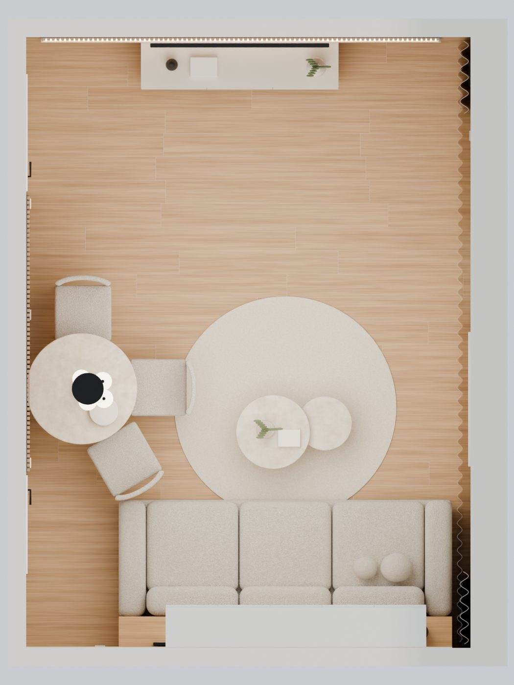
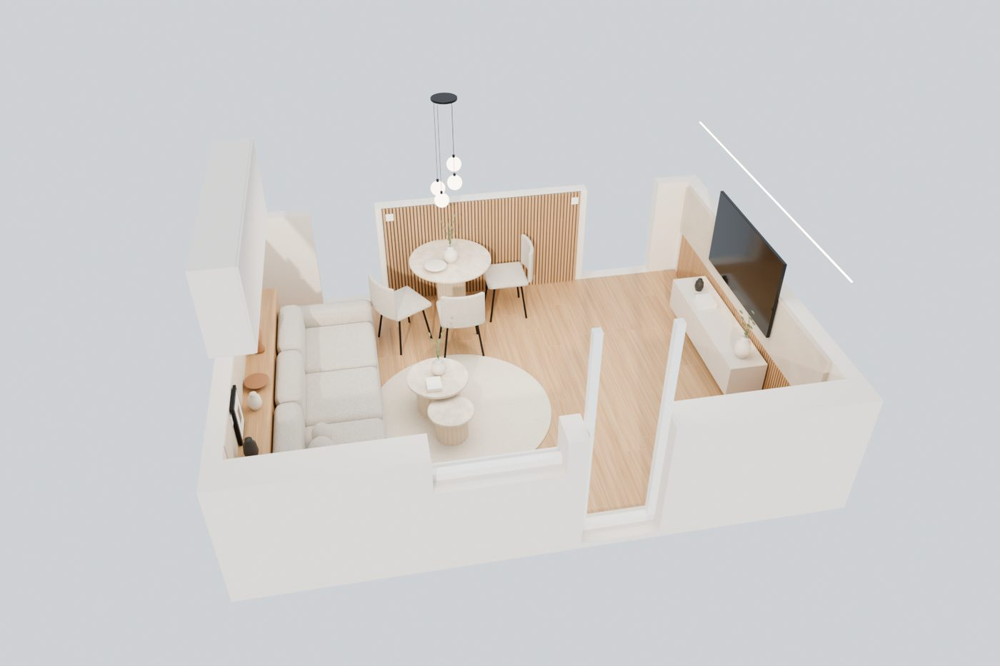
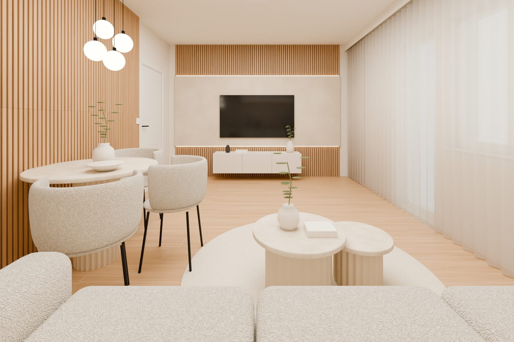
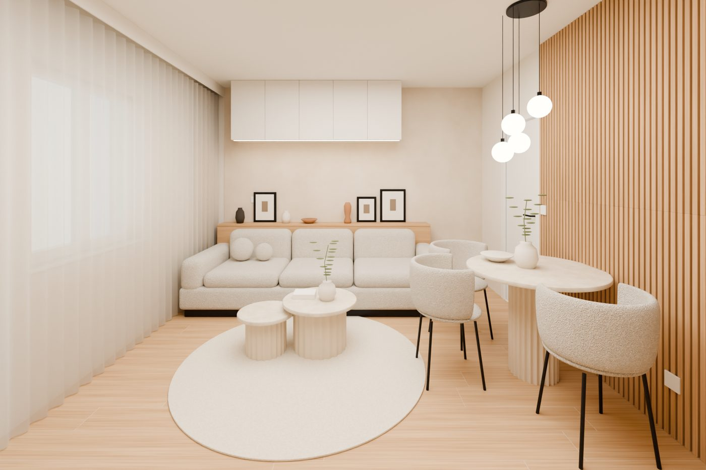
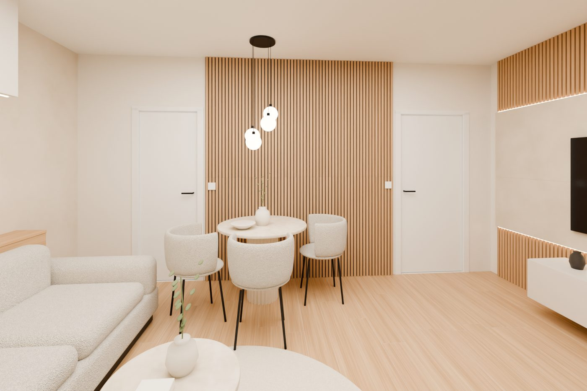
Od dverí je vľavo práčka 60 cm v nike, ktorej stena je o 11 cm hlbšie, v strede závesná umývadlová skrinka 50 cm na stene predsadenej až po strop kvôli rúram od radiátora a vpravo sprchový kút 93 × 143 cm. Na bočné steny ide sadrokartón a obklad (pri sprche 7 cm, pri práčke 11 cm), takže niša práčky má presne 60 cm. Od steny s umývadlom po protiľahlú stenu je 130 cm, presne na posuvné dvere SAT Feel 130, ktoré idú kolmo od hrany predsadenej steny. Obklad aj dlažba sú Aura Canvas Mate 60 × 60 z Merkury. Vybral si spoločnú dosku nad práčkou aj skrinkou; umývadlo je v troch variantoch U1 až U3 (otázka 20 v dokumente).
Fotky urobil ChatGPT Codex z makety v mierke (5. 11. 2026): batérie a sprchy SAT Aurum čierna matná zo SIKO (SATBAUR101C, SATBAUR215C, SATBSHSCSET, SATBSPVD41C, SATBSRS22C, hadica 150 cm), obklad Aura Canvas Mate 60 × 60 z Merkury so škárou 2 mm, umývadlo vo variante U1. Držiak ručnej sprchy v nákupe nie je, na fotkách je (napr. SATBSDPHC).
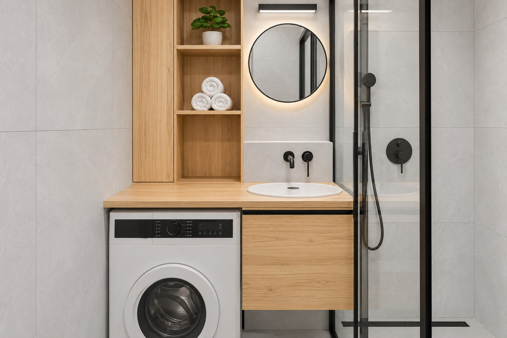
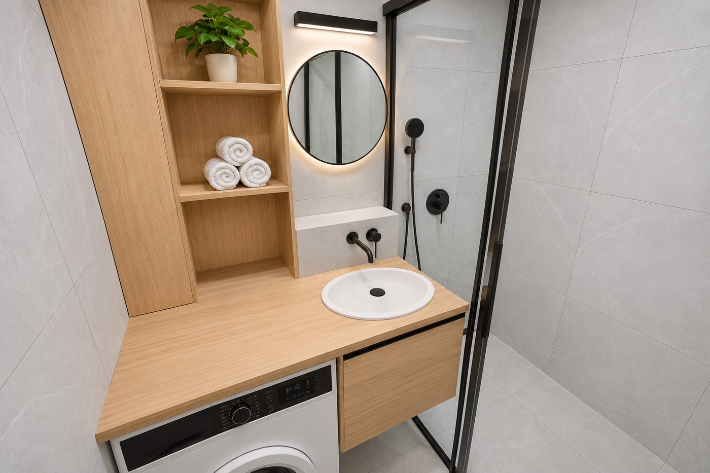
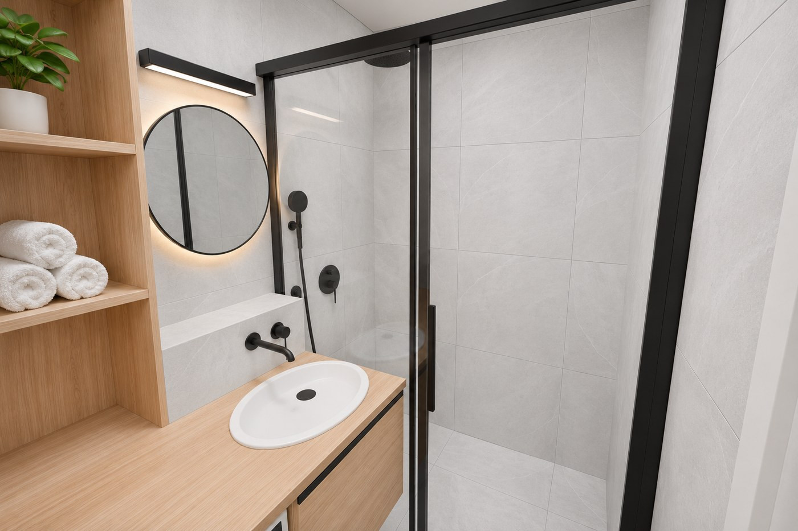
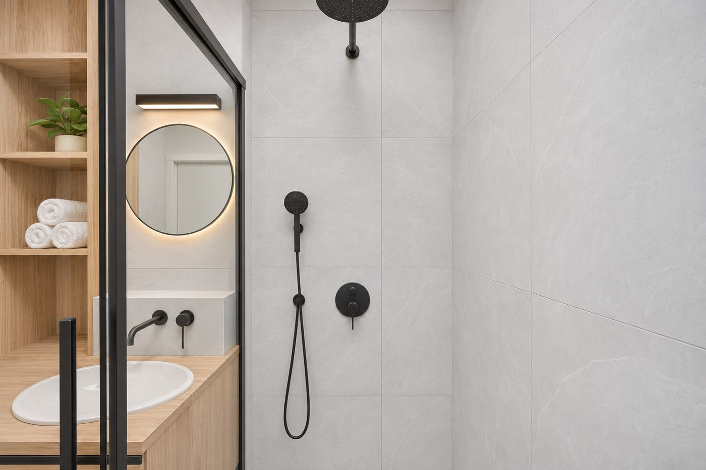
| Čo | Rozmer | Odkiaľ |
|---|---|---|
| Stena so sprchou, umývadlom a práčkou | 221 cm hrubá, 203 cm po obklade (93 + 50 + 60) | projekt, tvoja odpoveď 5. 11. |
| Hĺbka pri sprche | 143 cm od steny s batériou po protiľahlú stenu | tvoje meranie 4. 11. |
| Hĺbka pri umývadle | 130 cm od predsadenej steny po protiľahlú stenu | tvoje meranie 4. 11. |
| Hĺbka pri práčke | 141 cm, stena je o 11 cm hlbšie ako stena s umývadlom | tvoje meranie 4. 11. |
| Vstavaná práčka | niša 60 cm po obklade, vľavo pri stene s obývačkou | tvoja odpoveď 5. 11. |
| Umývadlová skrinka | 50 cm, závesná, umývadlo na dosku, batéria zo steny | tvoja odpoveď |
| Sprchový kút | 93 × 143 cm (100 k hrubej stene, 7 cm sadrokartón a obklad) | tvoje meranie 4. a 5. 11. |
| Sprchové dvere | SAT Feel 130, posuvné, čierny profil, číre sklo, kolmo od predsadenej steny | SIKO, tvoja odpoveď |
| Výstupok sadrokartónu | 13 cm len pri umývadle, až po strop (rúry od radiátora) | tvoje meranie 4. a 5. 11. |
| Obklad a dlažba | Aura Canvas Mate 60 × 60, po strop aj na podlahe | Merkury |
Žľab pri stene s batériou, podomietková batéria, dažďová sprcha zo steny a ručná sprcha. Posuvné dvere s pevným dielom pri stene s batériou a posuvným krídlom pri protiľahlej stene.
Závesná dubová skrinka 50 cm so zásuvkou, biele vrúbkované umývadlo na dosku, čierna batéria zo steny, okrúhle podsvietené zrkadlo a čierne svetlo nad ním.
Spoločná dubová doska nad práčkou aj skrinkou, nad práčkou dubové police na uteráky a úzka skrinka po strop.
Vysoká dubová skriňa po strop: dole práčka, nad ňou otvorená polica, hore dvoje dvierka.
Aura Canvas Mate 60 × 60, svetlosivý s jemnými bielymi žilkami, na stenách po strop aj na podlahe.
Maketa je v Blenderi postavená z rozmerov vyššie. Zábery sú z výšky očí, s rovnými zvislými hranami. Rovnaké kamery používa aj fotovizualizácia, preto sedia polohy aj mierka.
Úloha: vytvor fotorealistické fotovizualizácie novej kúpeľne (2 varianty) a WC z jednofarebných 3D makiet (verzia 3). PODKLADY (na tomto počítači): - Makety (vstupné obrázky): C:\Users\Ivlik\Documents\Blender-vizualizacie\byt-elektro\chatgpt-v3\ kupelna-A-stena.png, kupelna-A-sprcha.png, kupelna-A-dvere.png, kupelna-B-stena.png, kupelna-B-sprcha.png, kupelna-B-dvere.png, wc-A.png, wc-B.png - Prompty: C:\Users\Ivlik\Documents\Blender-vizualizacie\byt-elektro\chatgpt-v3\prompty.txt (sekcia „Obrázok: <súbor>“, pod ňou celý prompt pre ten obrázok) - Variant A = spoločná dubová doska nad práčkou aj skrinkou, nad práčkou police. Variant B = vysoká dubová skriňa s práčkou dole. Obe chcem vidieť, aby som si vybral. POSTUP: 1. Prečítaj prompty.txt a urob si zoznam 8 dvojíc maketa + prompt. 2. Pre každú dvojicu vygeneruj JEDEN obrázok nástrojom na úpravu obrázkov (ak ho nemáš, OpenAI Images API, režim úpravy obrázka, model gpt-image-1 alebo novší): vstup = maketa, prompt = celý text z prompty.txt bez úprav, veľkosť 1536 × 1024. 3. Ulož do C:\Users\Ivlik\Documents\Blender-vizualizacie\byt-elektro\foto-chatgpt\v3\ pod rovnakým menom ako maketa. Nič iné neprepisuj ani nemaž. 4. KONTROLA každého výsledku proti makete a bodom OBJECTS a AVOID v jeho prompte. Zvlášť: - obklad aj podlaha sú svetlosivé 60 × 60 s viditeľnou mriežkou škár, nie béžové a nie veľké dosky, - steny sú svetlé (tmavosivá v makete je len tieň), - sprchové dvere sú číre sklo v tenkom čiernom ráme, kolmo na stenu s batériou, - umývadlová skrinka je závesná, batéria vychádza zo steny, zrkadlo je okrúhle, - vo WC je závesná misa so štrbinou podlahy pod ňou, - žiadne pásy na okrajoch, nič pridané ani posunuté. Keď niečo nesedí, urob JEDEN opravný pokus: vstup = tvoj výsledok, druhý vstup = maketa, prompt = "Edit the first image. Keep everything else exactly as it is. Fix only: <čo konkrétne nesedí>. The second image is the 3D model of the same view; the layout must match it." Uložiť pod rovnakým menom. 5. Vytvor foto-chatgpt\v3\prehlad.html: pre každý záber vedľa seba maketa a fotka, pod tým názov a čo si opravoval. Otvor ho. 6. Napíš mi krátky súhrn: čo je hotové, čo si opravoval a čo stále nesedí. PRAVIDLÁ: - Ak nemáš nástroj ani API na generovanie obrázkov, zastav sa a povedz mi to. Nevyrábaj náhradu filtrami. - Nič nekupuj a nič nenahrávaj na internet okrem volaní generovania obrázkov.
Čaká na zadanie: pošli inšpiráciu, farby a nábytok a rozložím ich podľa elektroprojektu.
Čaká na zadanie: pošli inšpiráciu, farby a nábytok a rozložím ich podľa elektroprojektu.